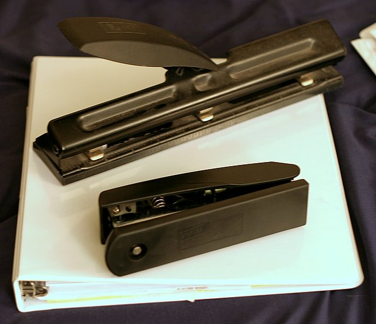
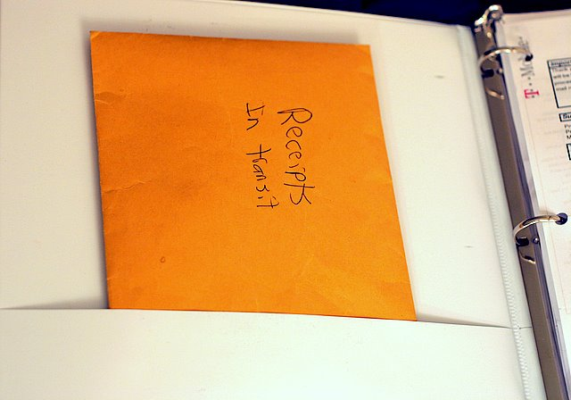
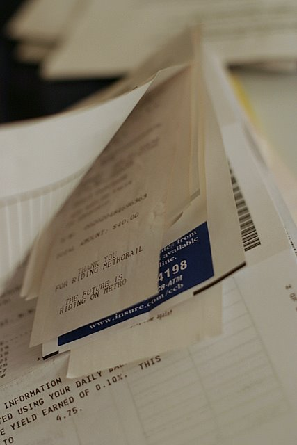

How I Organize My Bank Statements
Staying on top of your finances takes organization. Credit cards, banks, retirement accounts, pretty much anything related to your money comes with a statement that you need to keep track of until your taxes are accounted for at the very least. Here is how I go about tackling this dreaded task.

The only tools my method requires is a 3-ring binder, a hole puncher, and a stapler. Whenever I use my credit card or withdraw money from the ATM I keep the receipt so I can archive it later. First, they collect in my wallet and after a while the extra bulge becomes a real pain in my butt (literally). Their next holding bin is a small, manila envelope which I call receipts in transit.

This envelope sits in the pocket of my finance binder until the relevant statement comes in the mail. I punch holes in the statement so it can fit snuggly in my white binder and at the same time I go through the receipts in transit, picking out the relevant receipts. Comparing the amounts on the receipts to the amounts on the statement isn’t a bad idea. It is important to double check what your bank or credit card company is telling you since any mistake on their end can cost you money. Besides there is no law stating financial institutions are always right.
Next I staple the receipts to the statement so they will never be lost or misplaced. Now if for whatever reason I need to dig up a past receipt I can easily flip to the right statement and search through a handful of receipts instead of a whole shoe box full.

Once in my binder, the statements are filed in reverse chronological order or the latest statement is the first page I see. Most bills and bank statements get filed together including credit card bills, my cell phone bill, the cable bill, and my bank statements, all based on their closing date.
The hardest, and probably most important part, of making a system like this work is to keep up with it and organize your statements right when they come in. A little work every week can save a lot of headaches and hassle at the end of the year come tax time.

hey babe:
Awsome system of organization!! if only that carried over onto other aspects of your life, j/k. by the way GREAT handwriting… you should invest in a lable maker!! its much prettier… oh also your photos are awsome, you have managed to make billing statements look artful!! smooch
Reply
Sounds like you need this:
http://seejanework.com/Product.....roduct=453
I should talk though, my receipts are filed within envelopes by month, and then inside of a filing box. Doesn’t actually hold any practical use though, they just stay there.
Reply
Gosh, what a kool system!!! I wonder where you learned how to do that? At school? NOOOOOO……AT HOME?? YESSSSS!!!!
The next step is when I get to year-end, I put all the statements and bills and tax documents for that year in a big expandable folder labeled with the year and it goes in a file box. For a while there, until I cleaned up, I had folders going back to 1971 when we got married.
You really only need to hold 7 years worth of financial records for tax audit and other purposes.
Reply
[…] on the planet that would recognize my checks, and I. The habit has stuck with me as I now use the elaborate receipt filing system on my real bills that they taught me oh so long ago. It wasn’t until college when I realized […]
[…] detailed how I organize my bank statements before. But sorting through a month’s worth of receipts at once has become a real burden. […]
Wow, any auditor would love your system ^_^
Reply
Well I ditched this method in favor of scanning my receipts which takes less time -> http://www.russellheimlich.com.....-receipts/
I guess I’m even more of an auditors dream now?
Hi Russel, naaah, auditors want to look at original source documents =D Scanned documents will not do… Although they ARE easier to destroy though…. ^_^